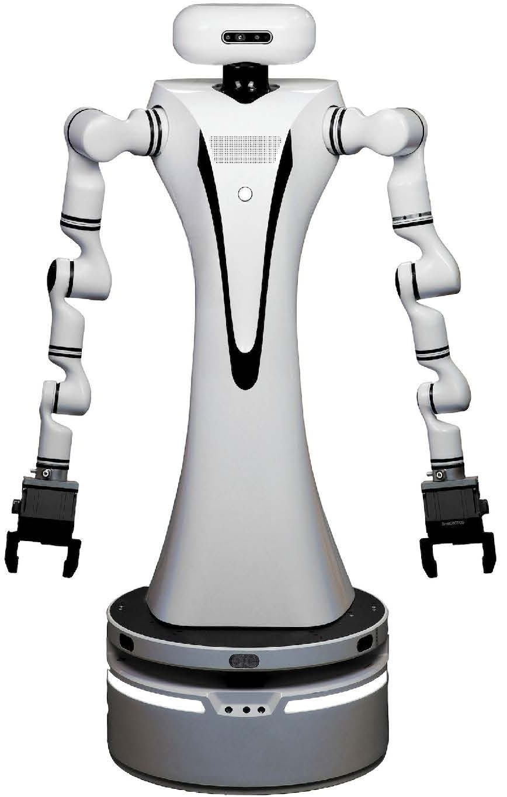
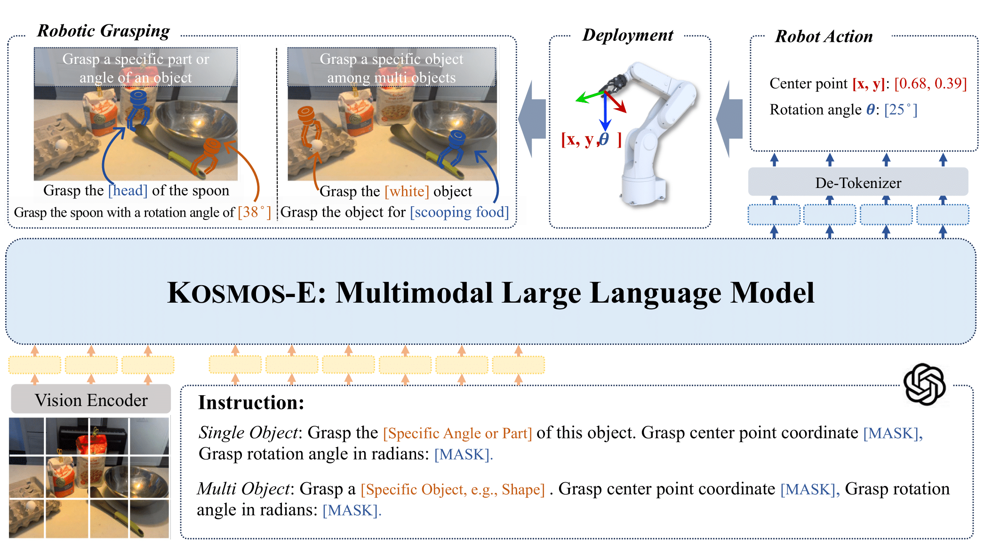

Hi, there. I'm Zhi Wang. I go by Leo. I'm a second-year CS PhD Student in Robotics🤖 at University of Maryland, College Park, advised by Prof. Yiannis Aloimonos. I received my Bachlor's degree in Electronic Engineering at Tsinghua University.
I'm also a research intern at Amazon FAR (Frontier AI & Robotics), working with Prof. Guanya Shi, Prof. Carlo Sferrazza, Dr. Rocky Duan, and Prof. Pieter Abbeel.
Previously, I was fortunate to work with Prof. Wenzhen Yuan at UIUC CS, Dr. Shaohan Huang at Microsoft Research and Prof. Jianyu Chen at Tsinghua IIIS.
I'm doing efficient robot learning from human data.
Goal: Let robots learn from multimodal information, like human videos and haptics, to achieve fine-grained and general-purpose robotic manipulation.
CV /
GitHub /
LinkedIn /
X /
Scholar /
Ins /
WeChat /
RedNote


Robotics PhD @ UMD
Research Intern@Amazon FAR
Email: tx.leo.wz@gmail.com
Happy to chat about research, startups, or anything else. Undergrads and master's/PhD students are all welcome!
- Nov, 2026, We are hosting the 1st Workshop on Structured Physical Intelligence (SPIN) at CoRL2026 in Austin on Nov 12, where I serve as a Program Chair. Come join us!
- Oct, 2026, HumanEgo received the Best Paper Award at the WORLDS workshop and the Best Demo Paper Award at the ScaleInfra workshop at IROS2026.
- Oct, 2026, I went to Pittsburgh to attend IROS2026.
- Sept, 2026, ForceBand was accepted to CoRL2026.
- May, 2026, I started my internship at Amazon FAR as an applied scientist intern.
- Aug, 2025, I joined University of Maryland as a CS PhD student.
- Mar, 2025, I started my internship at ZhenFund as a investment intern.
- Jan, 2025, DoorBot was accepted to ICRA2025
- Oct, 2024, I went to Abu Dhabi to attend IROS2024.
- June, 2024, KOSMOS-E was accpeted to IROS2024
- March, 2024, I started my internship at RoboTouch Lab, UIUC CS
- July, 2023, I started my internship at Microsoft Research Asia (MSRA)
- Apr, 2023, I started my internship at EncoSmart Technology, Beijing
(Work in Progress)
(Work in Progress)
Website (Work in Progress)
Open-X-Tactile (OXT) is a community-scale tactile dataset initiative for cross-sensor, cross-platform robot learning. It brings together tactile datasets from different institutions and sensing setups under a shared standard, making it easier to explore existing sources and contribute new data to a growing open ecosystem.

Website / Paper / arXiv / Slides / Poster / Video / Talk (1h) / Code
 /
Dataset /
Data Gallery /
Summary (110K views)
/
Dataset /
Data Gallery /
Summary (110K views)
We introduce HumanEgo, a robot-data-free, hardware-agnostic, and data-efficient pipeline that learns robot manipulation policies from minutes of raw human egocentric videos—powered by a flow matching policy with dense auxiliary objectives.
Website / Paper / arXiv / Video / Code
 /
Summary
/
Summary
ForceBand is a low-cost, wrist-worn sEMG band that predicts fingertip forces from forearm muscle activity, enabling force-enriched human demonstrations for learning forceful robot manipulation—without any force sensors on the hand.


DoorBot: Closed-Loop Task Planning and Manipulation for Door Opening in the Wild with Haptic FeedbackWebsite / Paper / Video / Code
 /
UIUC Summary /
Dataset
/
UIUC Summary /
Dataset
Proposed DoorBot, a haptic-aware closed-loop hierarchical control framework that enables robots to explore and open different unseen doors in the wild. We test our system on 20 unseen doors across different buildings, featuring diverse appearances and mechanical types. Our framework achieves a 90% success rate, demonstrating its ability to generalize and robustly handle varied door-opening tasks.

Website / Paper / Video / Code
Proposed KOSMOS-E, a Multimodal Large Language Model (MLLM) that leverages instruction-following robotic grasping data to enhance capabilities for precise and intricate robotic grasping maneuvers.
-
University of Maryland, College Park, USA
CS PhD in Robotics • Aug. 2025 to Present
Advisor: Prof. Yiannis Aloimonos
-
Tsinghua University, Beijing, China
B.Eng in EE • Aug. 2020 to Jun. 2025
Advisor: Prof. Milin Zhang, and Prof. Hui Lv
-
Amazon FAR (Frontier AI & Robotics)
Applied Scientist Intern • May. 2026 to now
Advisor: Prof. Guanya Shi, Prof. Carlo Sferrazza, Dr. Rocky Duan, and Prof. Pieter Abbeel -
RoboTouch Lab, UIUC CS
Research Assistant • Mar. 2024 to Nov. 2024 (9 mos)
Advisor: Prof. Wenzhen Yuan -
NLC Group, Microsoft Research Asia (MSRA)
Research Intern • June. 2023 to Mar. 2024 (9 mos)
Advisor: Shaohan Huang -
EncoSmart Technology (Beijing) Co., LTD
Research Intern • Apr. 2023 to Jun. 2023 (3 mos) -
ISR Lab, IIIS, Tsinghua University
Research Assistant • Sep. 2021 to Sep. 2022 (12 mos)
Advisor: Prof. Jianyu Chen
Chair of the Electronic Engineering Hardware Group, Tsinghua University2021 - 2023
- 30-Person Team, Tsinghua University [Website]
- Organized two major annual, university-wide competitions, engaging over 450 participants.
- Fall 2026, Graduate Teaching Assistant, CMSC426: Computer Vision University of Maryland
- Fall 2025 & Spring 2026, Graduate Teaching Assistant, CMSC420: Advanced Data Structure University of Maryland
- 2022, Head Teaching Assistant, 40231212: Intelligent Robots Design and Implementation Tsinghua University
- 2021, Head Teaching Assistant, 20230292: Project Design and Making of Electronic System Tsinghua University
- 2021, Head Teaching Assistant, 01550013: Synthetical Practice of Electronics System Design Tsinghua University
- Oct, 2026, GAMMA Lab @ UMD
- Sept, 2026, General Intelligent Machines, with Dr. Zhuo Xu
- June, 2026, OpenDriveLab @ HKU, with Prof. Hongyang Li
- June, 2026, Peking University, with Prof. Hao Dong's Lab
- June, 2026, TechBeat
- June, 2026, Shanghai AI Lab
- June, 2026, 3dcver
- June, 2026, Beijing Academy of Artificial Intelligence (BAAI)
- June, 2026, AI椰青
- June, 2026, Saturday Robotics at San Francisco
- Program Chair, 1st Workshop on Structured Physical Intelligence (SPIN) @ CoRL 2026, co-organized with Carlo Sferrazza et al. Austin, USA · Nov 2026
- IEEE International Conference on Robotics and Automation (ICRA) 2027 Conference
- Conference on Robot Learning (CoRL) 2026 Conference
- IEEE International Conference on Robotics and Automation (ICRA) 2026 Conference
- IEEE Transactions on Robot Learning (T-RL) 2026 Journal
- IROS 2026 Workshop — WORLDS: World Models and Spatial Intelligence for Physical AI Workshop
- IROS 2026 Workshop — ScaleInfra: Building Scalable Infrastructure for Robot Learning Workshop
- CoRL 2026 Workshop — Scaling H2R: Scaling Laws and Diversity in Human-to-Robot Workshop
- RSS 2026 Workshop — From Perception to Action: Representation-Centric Robot Autonomy Workshop
- Oct, 2024, Dean's Fellowship 2025, 2026 University of Maryland
- Oct, 2024, Science and Technology Innovation Scholarship (1 %), Three times: 2021, 2023, 2024 Tsinghua University
- Oct, 2024, Grand Prize of International Study Scholarship (0.2 %), Only 2 in 1018 People Tsinghua University
Selected repositories. Star counts update live from GitHub.
Zero-shot robot learning from minutes of human egocentric videos: robot-data-free and hardware-agnostic.
[ICRA'25] Closed-loop task planning and manipulation for door opening in the wild with haptic feedback.
Camera and hand-eye (eye-to-hand) calibration in Python 3, with <1 mm error, for any camera and robot arm.
Cities, architecture, night skies, and quiet moments — a monograph of 129 photographs across 17 series, shot on a Sony A7 IV. A fresh selection every visit.
Show moreShow less▾
-
⚽️ Soccer (FC Bayern: MIA SAN MIA) / 🏈 Football / 🎾 Pickleball / 🥏 Frisbee / 💪 Body Building
-
📷 Photography (Sony A7M4) / 🎧 Music (Hip-Hop, R&B, Soul) / 🎥 Movies / 🚗 Road Trip
-
Apple / SpaceX / Tesla / Google / Insta360
-
🗺️ Cities I've Been To — 59 cities · 🇨🇳 China 29 · 🇺🇸 US 26 · 🌍 Elsewhere 4
🇨🇳 China — Municipalities: Beijing 北京, Shanghai 上海, Tianjin 天津, Chongqing 重庆 · Hong Kong 香港 · Guangdong 广东: Shenzhen 深圳, Foshan 佛山, Zhuhai 珠海 · Henan 河南: Zhengzhou 郑州, Luoyang 洛阳, Kaifeng 开封, Puyang 濮阳, Hebi 鹤壁, Anyang 安阳 · Jiangsu 江苏: Nanjing 南京, Suzhou 苏州, Wuxi 无锡, Lianyungang 连云港 · Zhejiang 浙江: Hangzhou 杭州 · Anhui 安徽: Bengbu 蚌埠, Chuzhou 滁州 · Shandong 山东: Qingdao 青岛, Zaozhuang 枣庄 · Yunnan 云南: Kunming 昆明, Dali 大理, Lijiang 丽江, Xishuangbanna 西双版纳 · Liaoning 辽宁: Shenyang 沈阳 · Inner Mongolia 内蒙古: Ulanqab 乌兰察布
🇺🇸 United States — DC: Washington · NY: New York · PA: Pittsburgh, Philadelphia · MA: Boston · CT: New Haven · MD: College Park · IL: Champaign, Chicago · OH: Cleveland, Columbus, Cincinnati · IN: Indianapolis · SD: Wall · WY: Jackson · WA: Seattle · FL: Tampa · CA: Sacramento, Sausalito, San Francisco, San Jose, Palo Alto, Mountain View, Cupertino, Sunnyvale, Santa Clara
🌍 Elsewhere — Tokyo 🇯🇵, Abu Dhabi 🇦🇪, Bordeaux 🇫🇷, Amsterdam 🇳🇱 -
🎤 Concerts I've Been To — 15 shows · 🇨🇳 China 8 · 🇺🇸 US 7
🇨🇳 China — David Tao 陶喆 (Shenyang 沈阳), Kanye West (Shanghai 上海), MC HotDog 热狗 (Beijing 北京), Shing02 (Beijing 北京), Mayday 五月天 (Beijing 北京), Echo (Qingdao 青岛), Pharaoh 法老 (Beijing 北京), Leehom Wang 王力宏 (Beijing 北京)
🇺🇸 United States — David Tao 陶喆 (New York), Kanye West (Tampa), Laufey (Washington, D.C.), RAYE (Washington, D.C.), Rich Brian (Silver Spring), Lady Gaga (Washington, D.C.), Hamilton – the musical (Boston) - 🧍 Persons Who I Admire: My Mom, Kaká, Leo Messi, Thomas Müller, Elon Musk, Kanye West, David Tao, RAYE
- 🤖Entrepreneurship: I have always longed to have my own company, leading a team to develop some interesting and useful robot products. I'm currently formulating my ideas. If you are also interested in this, let's chat!
- ✝️ I'm Christian since 2026/09/06 2:15pm at CFC Berkeley